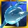

5-Reel 30-line Slots
The objective of Dolphin Cash is to obtain winning symbol combinations by spinning the reels.
To play the game:
- Line bets are chosen by clicking + and – below Line Bet to increase or decrease the amount.
- Paylines can be activated and their shape displayed by progressively clicking + and – below Lines. Paylines can also be activated by using the numbered buttons on either side of the reels. Selecting a high payline includes all the lower ones too. For example, selecting payline 6 also activates paylines 1 through 5. Clicking Bet Max activates all paylines with the currently selected bet per line and spins the reels.
- Total bet per game round = line bet X active paylines.
- Clicking Spin spins the reels with the current selection of lines and line bets. During the reel spins the Spin button changes intoStop. Clicking Stop ends the spin animation and immediately displays the spin result.
- Reels can also be spun using the Auto Play function. Mouse over the Auto Play button to display the list of options. Select the number of spins to be played automatically or choose Until Feature to spin until a Bonus or the Free Games round is triggered. Clicking on an option starts the Auto Play function. The Auto Play button changes into Stop during the Auto Play mode. The Auto Play mode ends when the reels have been spun the number of times determined by the player, or when a Bonus or Free Games round is triggered if you chose Until Feature, or when you click Stop.
- Wins are calculated according to the paytable. Line win = line bet X corresponding multiplier according to the paytable. Scatter win = total bet X corresponding multiplier according to the paytable. The paytable can be accessed via the Info page.
- On a given payline, only the highest payline winning combination pays while simultaneous winnings on different paylines are accumulated.
- In the case of a winning spin, the Win field displays the accumulating winnings. The Win ticker can be stopped by clicking anywhere on the screen to display the total win amount immediately.
- Payline wins and the total win are also displayed on the strip located at the bottom of the reels or the game window.
Info page:
- Clicking Info opens the reference screen describing different game components. Clicking the arrow buttons at the lower right-hand corner of the screen enables navigating between the different info screens.
- The Paytable screen shows all winning combinations. When opened after a winning spin, the winning symbol combinations (number of symbols and bet multiplier) are highlighted and blink.
- The Free Games screen describes the symbol combinations necessary to trigger the Free Games feature and describes the Free Games feature rules.
- The Dolphin Cash Bonus screen describes the necessary combination of symbols to enter the bonus round and describes the bonus round rules.
- The Xtra Win screen describes how the Xtra Win mode is activated and explains its rules.
- The Shifting Wild screen describes the rules of the Shifting Wild feature.
- The Paylines screen illustrates all possible paylines and explains the rules for calculating their wins.
- Clicking Back exits the Info screen and returns to the game.
- Active paylines are represented by lines that appear over the reels. Paylines can be activated and their shape displayed by progressively clicking + or – below Lines.
- Only active paylines can register wins.
- There is a difference between the line bet and the total bet. The line bet shows how much is being bet on a single payline. The total bet shows how much is being bet in total on the game round. Payouts shown in the paytable are multiplied by the line bet.
The Scatter symbol is an exception to these rules. More information about the Scatter symbol can be found below.
About payouts:- Payouts are listed on the Paytable screen. To find the possible win amount, the line bet must be multiplied by the payout.
- If two payline winning combinations occur on the same line, the higher of them is paid out. If more than one active payline has a winning combination, the winnings are accumulated.
- Winning combinations must start from the left most reel, and the symbols have to be consecutive.
The Scatter symbol is an exception to these rules. More information about the Scatter symbol can be found below.
Maximum Win Limit
The maximum win in the game has an upper limit. For more information, see the Terms and Conditions section.
Xtra Win ModeThe Xtra Win mode can be activated at any time during main game and can be played when the player bets on maximum paylines only. If the game is not played with all 30 active paylines, but you have activated the Xtra Win mode, a pop-up message appears explaining that the maximum number of lines has also been activated now.
Activating the Xtra Win mode invests an additional 50% of the player’s total bet in each spin. In return, Wild clones itself on reel #5 as follows:
| Wild's position on reel #5 | Cloned Wild's position on reel #5 |
|---|---|
| Top | Symbol clones 1 down |
| Middle | 1 symbol randomly clones either up, or down |
| Bottom | Symbol clones 1up |
During the reel-spins that follow, both wilds become shifting wilds. More information about the Shifting Wild feature can be found here. In Xtra Win mode, the Scatter wins are per the new total bet. Line bet wins are still per line bet.
Xtra Win improves the game's overall payout.
To trigger the Xtra Win feature, click the  button. A message appears saying that the Xtra Win mode is now activated. By clicking the button once again you disable the Xtra Win mode. A message appears saying that the Xtra Win mode has been deactivated.
button. A message appears saying that the Xtra Win mode is now activated. By clicking the button once again you disable the Xtra Win mode. A message appears saying that the Xtra Win mode has been deactivated.
Wild symbol
The Wild symbol  appears only on reel #5. It can stand for any other symbol, except Scatter and Bonus, to make the best possible winning combination.
There is also a separate payout for 2 or more Wild symbols on an active payline, as seen in the Paytable. This is paid out instead of the regular symbol win if the win amount from Wilds is larger than the win from the regular symbols (by Wild standing in).
If after a main game or Free Games spin the Wild symbol appears on reel #5, then during the spin that follows it moves one position to its immediate left. Each spin afterwards shifts the Wild further to its left, until the symbol reaches reel #1, thus ending the feature.
If a Wild covers a Scatter during the Shifting Wild feature, Scatter winning combinations still pay and Free Games can still be triggered. If Free Games are triggered during the Shifting Wild feature, you return to the feature after the Free Games have ended. Shifting Wilds won during Free Games are not carried on to main game. More information about Free Games can be found here.
If a Wild covers a Bonus during the Shifting Wild feature, the Dolphin Cash bonus can still be triggered. More information about the Dolphin Cash bonus can be found here.
If the Xtra Wild mode has been activated during the Shifting Wild feature, the feature ends for that round. A message will appear asking for your confirmation. More information about the Xtra Win mode can be found here.
Note: Any change to any bet amount terminates the Shifting Wild feature. Scatter symbolThe Scatter symbols  do not have to occur on any particular payline. If there are 3 or more Scatters in any position in the spin results, the payout earned is multiplied by the total bet and added to payline winnings.
do not have to occur on any particular payline. If there are 3 or more Scatters in any position in the spin results, the payout earned is multiplied by the total bet and added to payline winnings.
If 3 or more Scatter symbols appear in any position on the reels simultaneously during main game, 12 Free Games with X3 multiplier are triggered.
Bonus symbol
The Bonus symbol appears only on reels 1 and 5. If the Bonus symbol appears anywhere on reels 1 and 5 simultaneously after a main game spin, the Dolphin Cash Bonus is triggered. More information about the bonus can be found here.
To start the Dolphin Cash Bonus, click on Click to Start.
A welcome screen appears saying that the Dolphin Cash Bonus follows. A dolphin swimming underwater and 12 coins above the sea level are shown. Each coin holds a value equal to the current total bet (as written in the upper left-hand corner of the screen). Click theJump button at the bottom of the screen to make the dolphin jump and try to collect the coins. In addition, a seagull might appear and pick some or all of the remaining coins, if any remain, and add them to your total bet. All coins won during the bonus round are the cash prize bonus.
The Dolphin Cash Bonus is available during main game only.
Click Continue to return to the main game.
Free Games3 or more Scatters in any position on the reels simultaneously during main game trigger 12 Free Games with multiplier of x3.
Free Games cannot be retriggered.
To start the Free Games, click on Click to Start.
During the Free Games, the reels are spun automatically using the same number of lines and bets per line as on the spin that won the Free Games. After each spin, the win is displayed in the Win field. The Free Games Win field shows the accumulated winnings from the current Free Games.
After all Free Games have been completed, a result board summarizes the winnings. Game win shows the winnings that were received from the spin that won the free games. Feature win shows the winnings that were received during the Free Games. Total win shows the aggregate winnings (Game Win and Feature Win added up).
If Free Games are triggered during the Auto Play mode, the feature begins after the player clicks on Click to Start. When all Free Games have been played and the player clicks Continue on the screen summarizing the Free Games win, the Auto Play mode resumes. When returning to the main game, clicking anywhere on the screen stops the win ticker and displays the full prize.
Clicking Continue will return you to the main game. When returning to the main game, clicking anywhere on the screen stops the win ticker and displays the full prize. Free Game wins are added to the payline and Scatter wins.
Return to Player
The theoretical percentage return to player (RTP) is 94.55% in regular mode and 94.77% when playing in Xtra Win mode.